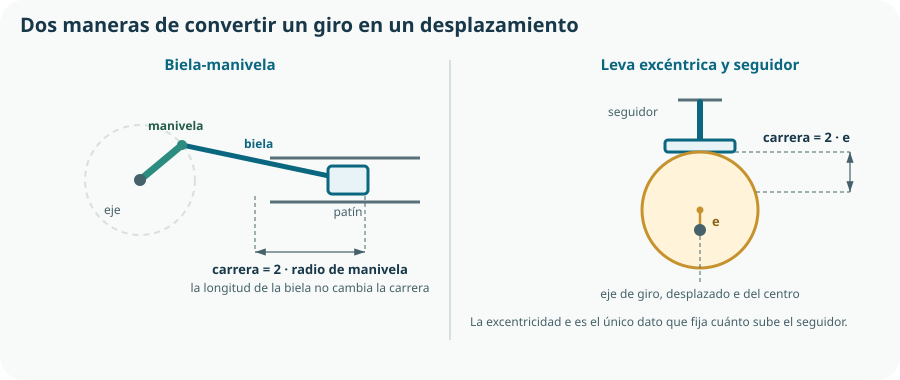

El Tema 7 movió el giro de un sitio a otro. Este lo cambia de naturaleza —de rotación a desplazamiento— y, sobre todo, se ocupa de todo lo que en los esquemas no aparece y en el taller decide si la máquina funciona: qué sujeta los ejes, qué une las piezas, qué pasa cuando dos ejes no están perfectamente alineados y por qué una máquina bien diseñada acaba destruyéndose si nadie la engrasa.
- distinguir transmisión de transformación del movimiento y clasificar un mecanismo en su tipo;
- explicar el funcionamiento de la biela-manivela y calcular su carrera;
- describir qué hace un cigüeñal y por qué es un mecanismo de transformación;
- comparar piñón-cremallera, leva-seguidor y tornillo-tuerca, y elegir entre ellos con criterios;
- identificar los elementos de soporte y guiado y distinguir cojinete de rodamiento;
- clasificar una unión en desmontable o fija y justificar cuál conviene;
- explicar para qué sirve un acoplamiento flexible y qué resuelve una junta Cardan;
- razonar el mantenimiento de un mecanismo: lubricación, desgaste y vida útil;
- interpretar un plano de conjunto con su lista de piezas.
1. Transformar el movimiento
Un mecanismo de transformación cambia la naturaleza del movimiento: convierte una rotación en una traslación, o una traslación en una rotación. Casi siempre funciona en los dos sentidos, y el sentido en que se usa lo decide la aplicación, no el mecanismo.
| Mecanismo | Convierte | Desplazamiento | Ejemplo cotidiano |
|---|---|---|---|
| Biela-manivela | Giro ↔ vaivén | Alternativo, limitado a dos veces el radio. | Motor de explosión, sierra de calar, máquina de coser. |
| Piñón-cremallera | Giro ↔ traslación | Continuo y tan largo como la cremallera. | Dirección de un coche, puerta de garaje, sacacorchos. |
| Leva-seguidor | Giro → vaivén | Alternativo, con la ley de movimiento que quieras tallar. | Válvulas de un motor, mecanismo de un reloj, cerradura. |
| Tornillo-tuerca | Giro ↔ traslación | Continuo, muy lento y con mucha fuerza. | Gato de coche, sargento, mordaza, mesa de una fresadora. |
2. Biela-manivela y cigüeñal
La biela-manivela es el mecanismo de transformación más importante de la historia industrial: es el que convierte la explosión de un pistón en el giro de las ruedas de un coche. Consta de tres elementos: una manivela que gira, una biela articulada en sus dos extremos y un patín o pistón que se desplaza guiado.

carrera = 2 · r r es el radio de la manivela; la longitud de la biela no interviene
El cigüeñal
Un cigüeñal es un eje con varias manivelas —los codos— desfasadas entre sí, cada una unida a la biela de un pistón. Su función es reunir el vaivén de varios pistones en un único giro continuo y regular. No transmite el movimiento: lo transforma, y por eso se estudia aquí y no en el Tema 7, donde el texto oficial lo enumera.
3. Cremallera, leva y tornillo
Piñón-cremallera
Un piñón engrana con una barra dentada recta, la cremallera. Al girar el piñón, la cremallera avanza. Es un engranaje en el que una de las ruedas tiene radio infinito, y por eso comparte con los engranajes la precisión y la ausencia de deslizamiento.
avance por vuelta = π · Dpiñón = paso · Zpiñón el avance es la circunferencia del piñón que «se desenrolla»
Leva-seguidor
Una leva es una pieza de perfil no circular que, al girar, desplaza un seguidor apoyado en ella. Su virtud es única entre todos los mecanismos: el perfil de la leva es el programa del movimiento. Puedes tallar una leva que suba rápido, se quede arriba media vuelta y baje despacio. Ningún otro mecanismo mecánico permite eso.
carrera = radio máximo − radio mínimo del perfil en una leva excéntrica circular, carrera = 2 · e
Tornillo-tuerca
Al girar un tornillo, la tuerca avanza —o al contrario—. Su característica definitoria es la enorme multiplicación de fuerza: una vuelta completa de la manivela produce un avance de un paso, que puede ser de uno o dos milímetros. Eso significa mucho recorrido angular por muy poco recorrido lineal, y por tanto una fuerza axial altísima.
avance por vuelta = paso de la rosca 1 mm de paso: 360° de giro para avanzar 1 mm
4. Elegir el mecanismo de transformación
| Criterio | Biela-manivela | Piñón-cremallera | Leva | Tornillo-tuerca |
|---|---|---|---|---|
| Recorrido | Limitado a 2r | Largo | Limitado y pequeño | Largo pero lento |
| Fuerza que da | Media, variable | Media | Alta en el contacto | Muy alta |
| Ley de movimiento | Fija, casi sinusoidal | Lineal y uniforme | La que se talle | Lineal y uniforme |
| Rendimiento | Alto | Alto | Medio | Bajo |
| Se mueve solo con la carga | Sí | Sí | Depende | No: irreversible |
5. Soportes, ejes y guiado
Todo lo anterior gira o se desliza, y necesita algo que lo sostenga permitiendo ese movimiento y bloqueando todos los demás. Esa es la función del guiado: permitir el movimiento deseado e impedir los indeseados.
| Elemento | Función | Observaciones |
|---|---|---|
| Eje | Elemento cilíndrico que gira y transmite par. | Un eje gira; un árbol gira y transmite par; un husillo es un eje roscado. |
| Cojinete de fricción | Casquillo en el que el eje desliza directamente. | Barato, silencioso y compacto; necesita lubricación y tiene más rozamiento. |
| Rodamiento | Interpone bolas o rodillos entre eje y soporte. | Rozamiento mucho menor, soporta más velocidad; más caro y más ruidoso. |
| Chumacera | Soporte completo que aloja el cojinete o rodamiento y se atornilla al bastidor. | Facilita el montaje y la alineación. |
| Guía lineal | Permite el desplazamiento recto e impide el giro. | Varilla y casquillo, o carro sobre perfil. El patín del KR-1 va sobre guía. |
| Casquillo de tope y arandela | Fijan la posición axial del eje. | Sin ellos, el eje «viaja» a lo largo y desalinea el engranaje. |
6. Uniones entre piezas
El currículo pide expresamente la «unión de elementos mecánicos». La primera decisión no es qué tornillo usar, sino si la unión debe poder deshacerse.
Uniones desmontables
Se pueden deshacer sin dañar las piezas: tornillos, pasadores, chavetas, anillos elásticos, encajes a presión. Permiten montar, ajustar, reparar y reciclar.
Uniones fijas
Deshacerlas destruye la unión o las piezas: soldadura, remachado, encolado, sobremoldeo. Son más rígidas, más ligeras y más baratas en serie.
| Unión | Tipo | Ventaja | Cuidado con |
|---|---|---|---|
| Tornillo y tuerca | Desmontable | Universal, normalizado, ajustable, reutilizable. | Se afloja con la vibración: hace falta arandela elástica, tuerca autoblocante o adhesivo de roscas. |
| Chaveta o lengüeta | Desmontable | Une una rueda a su eje transmitiendo par sin que patine. | El chavetero debilita el eje: es el punto por donde rompe. |
| Pasador | Desmontable | Fija la posición relativa con precisión; puede actuar de fusible mecánico. | No está pensado para transmitir par grande. |
| Anillo elástico | Desmontable | Retiene axialmente un eje con muy poco espacio. | No aguanta carga axial importante. |
| Remache | Fija | Rápida, barata, accesible por un solo lado. | Para desmontar hay que taladrarla. |
| Soldadura | Fija | Continuidad total, la unión más rígida. | Deforma por calor y crea tensiones internas; exige formación y protección. |
| Adhesivo | Fija | Une materiales distintos y reparte la carga en toda la superficie. | Depende de la preparación de la superficie y envejece. |
| Encaje a presión o clip | Desmontable o fija según diseño | Coste de montaje nulo: es la unión del plástico inyectado. | Fatiga del clip y tolerancias muy ajustadas. |
7. Acoplamientos y junta Cardan
Un acoplamiento une dos ejes en prolongación para transmitir el giro. Parece el elemento más trivial de una máquina y resuelve uno de sus problemas más frecuentes: en la realidad, dos ejes nunca están perfectamente alineados.
| Tipo | Tolera desalineación | Comportamiento | Cuándo se usa |
|---|---|---|---|
| Rígido | Ninguna | Los dos ejes se comportan como uno solo; máxima rigidez torsional. | Cuando la alineación está garantizada por mecanizado o por un bastidor común. |
| Flexible (elastómero, garras, fuelle) | Pequeña, angular y paralela | Absorbe desalineaciones, amortigua vibraciones y golpes de par. | Motor y máquina montados por separado. Es el caso normal. |
| Elástico helicoidal | Pequeña | Muy usado en ejes pequeños; barato y compacto. | Impresoras 3D, robótica educativa, el propio KR-1. |
| Junta Cardan | Angular grande | Transmite entre ejes que forman un ángulo apreciable; la velocidad de salida fluctúa dentro de cada vuelta. | Transmisión de un vehículo, llaves articuladas, ejes que cambian de dirección. |
| Junta homocinética | Angular grande | Como la Cardan pero sin fluctuación de velocidad. | Ruedas motrices y directrices de un coche. |
8. Lubricación, desgaste y vida útil
Un mecanismo con piezas en contacto y movimiento relativo se desgasta. La lubricación interpone una película entre las superficies, y con eso consigue tres cosas a la vez: reducir el rozamiento —y por tanto subir el rendimiento del Tema 7—, evacuar el calor y arrastrar las partículas de desgaste.
Aceite
Fluye, refrigera y se filtra; exige retenes y un nivel que revisar. Reductores cerrados y motores.
Grasa
Se queda donde se pone y no necesita estanqueidad perfecta; no refrigera. Rodamientos y engranajes abiertos.
Seco
Polímeros autolubricados o recubrimientos. Ideal cuando no habrá mantenimiento: es la opción del KR-1.
Sellado de fábrica
El motorreductor viene lubricado y cerrado para toda su vida. Se sustituye entero, no se mantiene.
| Fenómeno | Qué ocurre | Cómo se previene |
|---|---|---|
| Desgaste por abrasión | Partículas duras rayan las superficies en contacto. | Lubricación limpia, sellado contra el polvo del huerto. |
| Desgaste por adhesión | Las superficies se pegan y se arrancan material mutuamente. | Película lubricante suficiente; materiales distintos en cada pieza del par. |
| Fatiga superficial | Picaduras en el flanco del diente o en la pista del rodamiento. | No superar la carga admisible; alineación correcta. |
| Corrosión | El mecanismo se oxida y se agarrota. | Materiales del Tema 5, recubrimientos y estanqueidad. |
| Aflojamiento | La vibración desaprieta la tornillería. | Elementos antigiro y una revisión periódica prevista en el manual. |
9. El plano de conjunto
Un mecanismo no se documenta con un plano por pieza y nada más: hace falta un plano de conjunto que muestre cómo se relacionan, con una lista de piezas numerada que remite a cada elemento. Es la aplicación directa del Tema 3 y del Tema 4.
| N.º | Denominación | Cant. | Material o referencia | Observaciones |
|---|---|---|---|---|
| 1 | Motorreductor de CC | 1 | Comercial, i = 9 | Lubricado y sellado de fábrica. |
| 2 | Acoplamiento elástico ⌀5-⌀6 | 1 | Comercial | Absorbe desalineación y picos de par. |
| 3 | Husillo de accionamiento | 1 | Acero inoxidable, paso 2 mm | Rosca a la derecha. |
| 4 | Tuerca del obturador | 1 | Polímero autolubricado | Sin engrase; ver Tema 5. |
| 5 | Guía lineal del patín | 2 | Varilla ⌀4 inoxidable | Impide el giro del obturador. |
| 6 | Cojinete de polímero | 2 | Comercial | Autolubricado. |
| 7 | Soporte impreso | 1 | PETG | Pieza del Tema 6. |
| 8 | Tornillo M3×12 con tuerca autoblocante | 4 | DIN 912 / DIN 985 | Unión desmontable; la autoblocante evita el aflojamiento. |
Comprueba lo que has aprendido
Este tema se demuestra con un mecanismo montado que funciona y una lista de piezas que alguien más podría comprar.
| Aspecto | Qué debes demostrar | Evidencias posibles |
|---|---|---|
| Transformación | Que eliges el mecanismo por criterios y calculas su carrera. | Tabla comparativa de los cuatro mecanismos para tu caso y el cálculo de la carrera obtenida. |
| Soporte y guiado | Que el eje está sostenido, guiado y retenido axialmente, y que has decidido entre cojinete y rodamiento. | Esquema del guiado, elección justificada del apoyo y comprobación de la alineación en el montaje. |
| Uniones y acoplamientos | Que distingues desmontable de fija y que has previsto el aflojamiento y la desalineación. | Uniones justificadas una a una, elementos antigiro previstos y acoplamiento elegido con su tolerancia. |
| Mantenimiento | Que el mecanismo está pensado para las condiciones reales de mantenimiento. | Decisión de lubricación razonada, juego previsto y apartado de mantenimiento en el manual del Tema 4. |
| Documentación | Que el conjunto está representado y despiezado. | Plano de conjunto con lista de piezas numerada, con la mayor parte de elementos comerciales normalizados. |
Prueba de montaje: ensambla el mecanismo, hazlo funcionar cincuenta ciclos completos y vuelve a medir la carrera. Si ha cambiado, hay juego, aflojamiento o desgaste, y los tres son información de diseño.
Glosario del tema
- Acoplamiento
- Elemento que une dos ejes en prolongación para transmitirse el giro.
- Árbol
- Eje que además de girar transmite par.
- Biela
- Barra articulada en sus dos extremos que enlaza la manivela con el patín o pistón.
- Carrera
- Recorrido total de un elemento con movimiento alternativo, entre sus dos posiciones extremas.
- Chaveta
- Pieza que une una rueda a su eje transmitiendo par e impidiendo que patine.
- Chumacera
- Soporte que aloja un cojinete o rodamiento y se fija al bastidor.
- Cigüeñal
- Eje con varias manivelas desfasadas que reúne el vaivén de varios pistones en un giro continuo.
- Cojinete
- Casquillo sobre el que el eje desliza directamente.
- Cremallera
- Barra dentada recta que engrana con un piñón para convertir giro en traslación.
- Excentricidad
- Distancia entre el eje de giro de una leva y el centro de su perfil; fija la carrera del seguidor.
- Husillo
- Eje roscado destinado a transformar giro en desplazamiento.
- Junta Cardan
- Acoplamiento que transmite el giro entre ejes que forman un ángulo, con fluctuación de velocidad dentro de cada vuelta.
- Junta homocinética
- Acoplamiento angular que mantiene constante la velocidad de salida.
- Juego
- Holgura prevista entre piezas en contacto, necesaria para la lubricación y la dilatación.
- Leva
- Pieza de perfil no circular que al girar impone al seguidor la ley de movimiento tallada en ella.
- Manivela
- Elemento que gira alrededor de un eje y arrastra la biela desde un punto excéntrico.
- Movimiento alternativo
- Desplazamiento que va y vuelve entre dos posiciones extremas.
- Rodamiento
- Apoyo que interpone bolas o rodillos entre el eje y su soporte para reducir el rozamiento.
- Retroceso
- Recorrido perdido al invertir el sentido de giro debido al juego del mecanismo.
- Unión desmontable
- Unión que puede deshacerse sin dañar las piezas.
- Unión fija
- Unión cuya separación destruye la propia unión o las piezas.
Resumen esencial
- Transformar el movimiento es cambiar su naturaleza: de giro a desplazamiento o al contrario.
- Los cuatro mecanismos esenciales son biela-manivela, piñón-cremallera, leva-seguidor y tornillo-tuerca.
- En la biela-manivela la carrera es dos veces el radio de la manivela; la longitud de la biela solo cambia la suavidad del movimiento.
- El cigüeñal transforma —no transmite— el vaivén de varios pistones en un giro continuo, y sus codos van desfasados para que el par sea uniforme.
- El perfil de una leva es el programa del movimiento: ningún otro mecanismo permite decidir la ley de desplazamiento.
- El tornillo-tuerca da una fuerza enorme, avanza un paso por vuelta y suele ser irreversible, lo que lo convierte en freno automático.
- El guiado permite el movimiento deseado e impide los demás; sin retención axial, un eje se desplaza y desalinea el mecanismo.
- Un cojinete es barato, silencioso y compacto; un rodamiento reduce el rozamiento y admite más velocidad.
- La desalineación provoca calentamiento, desgaste y rotura por fatiga muy por debajo de la carga calculada.
- La primera decisión de una unión es si debe poder deshacerse; y la unión es casi siempre el punto por el que rompe una pieza.
- Un acoplamiento flexible tolera desalineaciones, amortigua los picos de par y protege el mecanismo.
- La junta Cardan transmite entre ejes en ángulo pero fluctúa la velocidad; la homocinética no, y por eso va en las ruedas directrices.
- La lubricación reduce el rozamiento, evacua calor y arrastra partículas; cuando no habrá mantenimiento, la solución es la lubricación seca o el conjunto sellado de fábrica.
- El juego es una especificación, no un defecto, pero produce retroceso y con ello error de posición.
- Un plano de conjunto con su lista de piezas es el documento del mecanismo, y cuantas más piezas comerciales normalizadas contenga, mejor es el diseño.
Fuentes y recursos fiables
- [1] UNE — Asociación Española de Normalización. Tornillería, chavetas, pasadores y anillos elásticos normalizados (series DIN e ISO recogidas como UNE-EN ISO).
- [2] Algodoo. Simulación de biela-manivela, levas y mecanismos articulados en dos dimensiones.
- [3] GeoGebra. Construcción dinámica de la trayectoria de un mecanismo y de su ley de movimiento.
- [4] FreeCAD. Ensamblaje del mecanismo y comprobación de interferencias y recorridos.
- [5] Decreto 64/2022, de 20 de julio (BOCM). Currículo de Tecnología e Ingeniería I, bloque C y criterio 4.1.